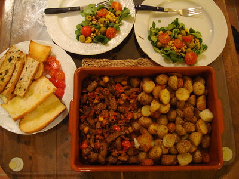
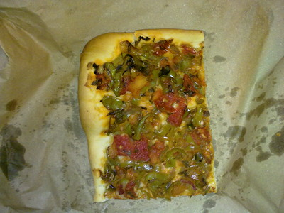

Presentación
Mallorca
Mallorca es una isla española situada en la parte central del archipiélago balear, en el mar Mediterráneo. Su capital, y también la de la comunidad autónoma de las Islas Baleares, es Palma de Mallorca, siguiéndola en importancia los municipios de Calviá, Inca y Manacor. La isla de Cabrera y todos sus islotes pertenecen administrativamente a la capital.
Mallorca tiene 3.640,11 km² (kilómetros cuadrados), lo que la convierte en la más extensa de España y la séptima más extensa del Mediterráneo. Sus 859 289 habitantes (INE 2015) la hacen la isla más poblada del archipiélago balear y la segunda isla más poblada de España tras Tenerife. Además, es también la cuarta isla más poblada del Mar Mediterráneo. Mallorca posee una densidad de población de 240,45 hab./km² (habitantes por kilómetro cuadrado). Antaño, por su ambiente sosegado, era también conocida como «La isla de la calma», pero ahora es un destino turístico muy importante, tanto a nivel nacional como internacional. Mallorca posee 550 km (kilómetros) de costa con más de 345 playas de muy variado tipo, desde pequeñas calas de piedra hasta largas playas de arena.
Fuente: Mallorca - Wikipedia

Su gastronomía
La gastronomía de Mallorca es el conjunto de recetas propias e ingredientes típicos de Mallorca (Baleares, España), una isla grande dividida en tres partes: la sierra de Tramontana, la sierra de Levante y la llanura entre ambas. El cultivo de hortalizas y cereales y la cría de cerdos en el interior se complementa con la pesca de la costa. Las matanzas son muy importantes en la isla, ya que permiten aprovechar todo el cerdo en una variedad de embutidos y por supuesto también en la ensaimada. La isla cuenta con gran tradición panadera y pastelera, ya que al datar del siglo XIV, es uno de los gremios más antiguos del país y, de hecho, buena parte de sus hornos tienen más de 200 años
Ingerdientes báscicos
- Pescado y marisco de toda clase.
- Hortalizas y legumbres de toda clase: ajo, tomate, berenjena, pimiento, patata, alcachofa, haba, cebolla.
- Carne: cerdo.
- Grasas: Sobre todo aceite de oliva de Mallorca, pero también, a veces, manteca. No suele encontrarse mantequilla, nata ni otros aceites.
- Especias: sal, pimienta negra, guindilla.
Especialidades
-

Ensaimada: El producto mallorquín más conocido fuera de la isla, es una pasta blanda y cocida con sebo (grasa de cerdo), de forma circular y espolvoreada con azúcar glas. Este dulce se produce con denominación de origen y suele superar los 15 cm de diámetro, llegando a veces al medio metro (fuera de Mallorca suele ser más pequeño).
-
Sobrasada: Es un embutido con denominación de origen protegida por la Unión Europea. Se hace con carne magra de cerdo, manteca y pimentón molido. Se conserva en tripa y se sirve cruda, frita o asada, fría o caliente, con dulce o salado. También hay una denominación de origen específica para la sobrasada de Mallorca hecha con cerdo ibérico de la isla.
-

Frito Mallorquín: Es un plato tradicional elaborado con carne, asadura, hígado y sangre cocida de cerdo, oveja, cabrito o incluso pavo, todo ello frito en aceite de oliva con cebolla, tomate, pimiento y patata. Es un plato de origen judío que ya se cita en varios recetarios antiguos, como el Llibre de Sent Soví.
-

Pa amb oli: El Pa amb oli (en castellano: pan con aceite), es una de las preparaciones más típicas de la cocina mallorquina. Aunque es parecido al pa amb tomàquet catalán se diferencia en el tipo de pan empleado y la cantidad de tomate. La receta fue documentada por primera vez en el siglo XVIII por el fraile mallorquín Jaume Josep Bernat Martí i Oliver
-

Coca Trampo: Es una coca de recapte (variada) con diversas hortalizas. Esta coca está extendida fuera de Mallorca, especialmente en la Comunidad Valencia y en el Ponent catalán. Otras cocas son la de sebo, hecha a base de masa fresca de ensaimada.